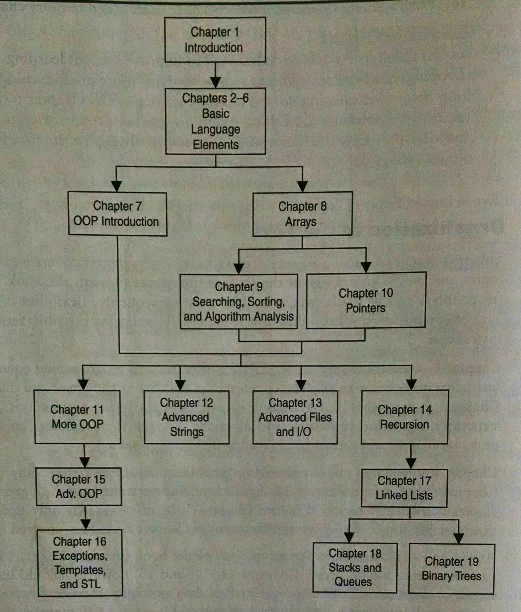
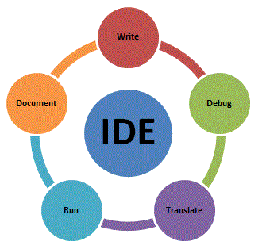
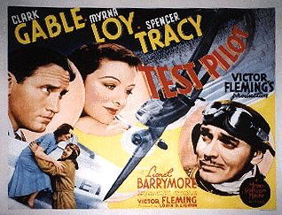
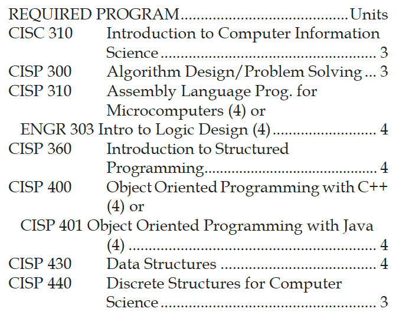
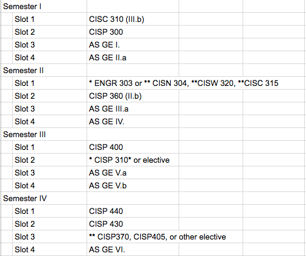
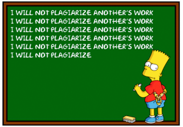
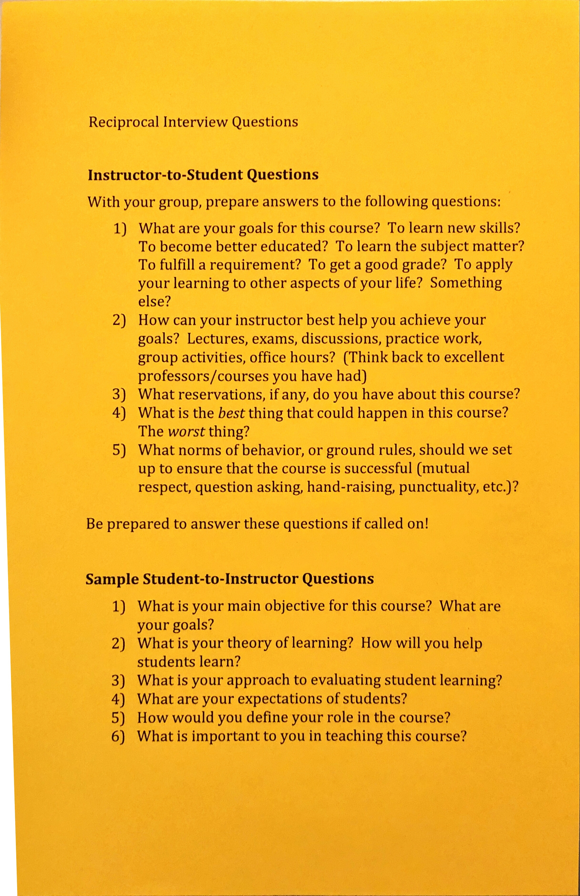
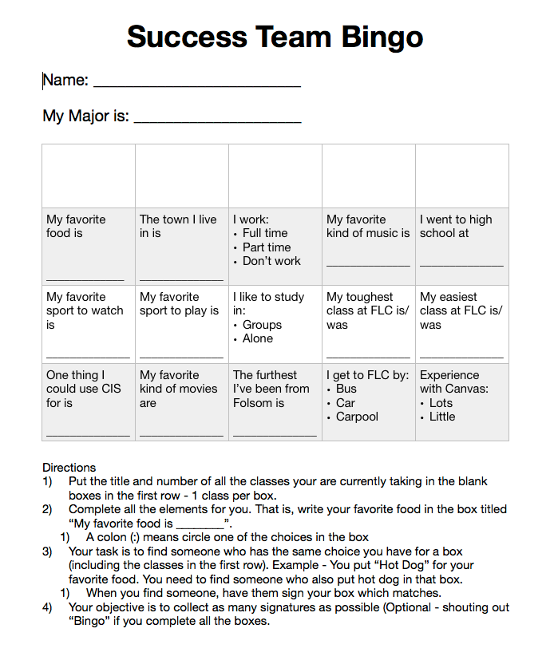
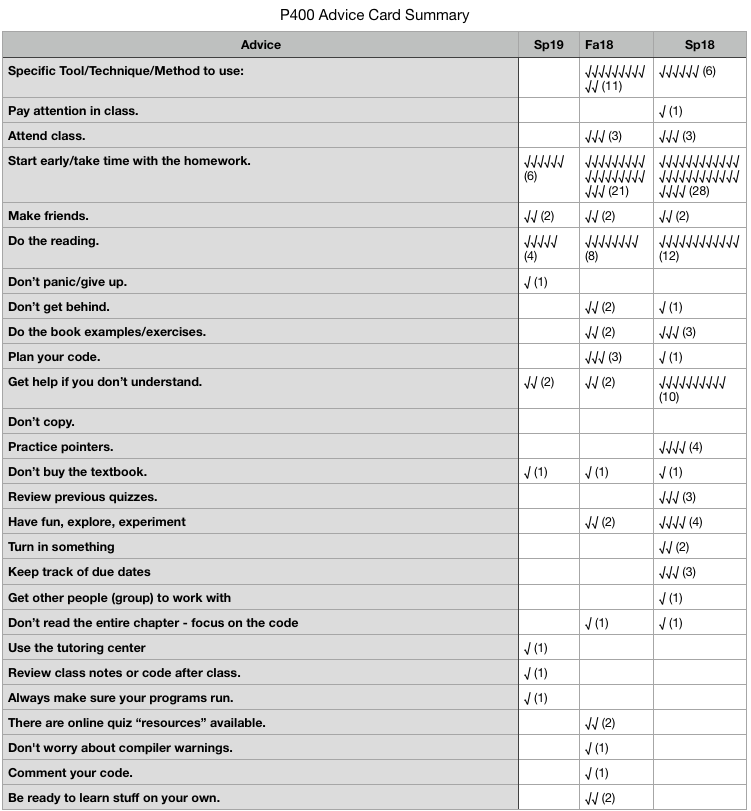

C++
Object Oriented Programming in C++
Dr. Fowler
Folsom Lake College
CISP 400 — Class Introduction

Course topic progression
What you will need.


Exercise
Fountain of Knowledge
Instructor as guide


CIS AS semester plan

Do not plagiarize another student’s work
Exercise

Reciprocal Interview Questions handout
Review
CISP 400 — Class Introduction
Next Time
Activity

Success Team Bingo handout
What worked about this exercise?
What could be improved about this exercise?
Why did I ask you to do ….
Connect the activity with course objectives/SLOs.
Connect the activity with course readings.
Exercise
You have advice from last semester’s students.
Take a minute to read it.

P400 Advice Card Summary
What worked about this exercise?
What could be improved about this exercise?
CISP 400 · Fowler